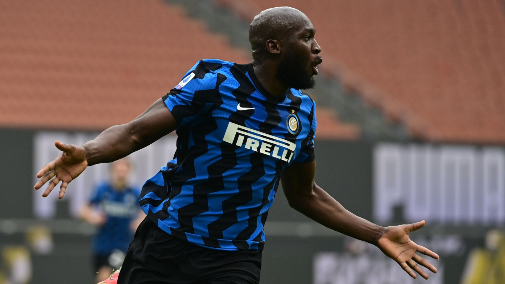

ROMELU LUKAKU
ROMELU LUKAKUหนึ่งในกองหน้าที่ประสบความสำเร็จมากที่สุดในฟุตบอลยุโรป ได้กลับมายังสโมสรที่เขาสนับสนุนตั้งแต่ยังเป็นเด็ก นอกจากนี้เขายังต้องแบกรับความคาดหวังเป็นอย่างสูงจากแฟนบอลเชลซีทั่วโลก ที่ต้องการให้เขาเข้ามาแก้ปัญหาการจบสกอร์ในพื้นที่สุดท้ายของทีม
ในระหว่างที่ค้าแข้งกับอินเตอร์ ลูกากู มีชื่อเป็นนักเตะยอดเยี่ยมประจำรายการยูโรป้า ลีก 2019/20 ก่อนจะมีบทบาทสำคัญในการพาทีม ‘งูใหญ่’ ผงาดคว้าแชมป์เซเรีย อา ในฤดูกาลที่แล้ว พกสถิติยิง 24 ประตูกับอีก 11 แอสซิสต์ คว้ารางวัล MVP ประจำการแข่งขันได้ด้วย
ลูกากู กลับมาที่สแตมฟอร์ด บริดจ์ หนึ่งทศวรรษหลังจากที่เขาย้ายเข้าร่วมสโมสรในตอนแรก เขายิงไป 80 ประตูให้กับสโมสรและทีมชาติใน 2 ฤดูกาลที่ผ่านมา โดยเพิ่มความเด็ดขาดในเกมการเล่นที่ปราดเปรียวและเหนียวแน่น ซึ่งเป็นจุดเด่นของเขามาอย่างยาวนาน
ปัจจุบัน ลูกากู อายุ 28 ปี และเพิ่งมีชื่อติดทีมยอดเยี่ยมประจำทัวร์นาเม้นต์ยูโร 2020 จากผลงานซัลโว 4 ประตูในนามทีมชาติเบลเยี่ยม เขาช่วยทีมผ่านเข้าถึงรอบก่อนรองชนะเลิศ ก่อนจะโดนทีมแชมป์อย่างอิตาลีเขี่ยตกรอบไป สำหรับ ลูกากู มีผลงานที่น่าประทับใจกับ ‘ปีศาจแดงแห่งยุโรป’ เขายิงไปแล้ว 64 ประตูจากการลงสนามช่วยทีมชาติ 98 นัด ซึ่งถือเป็นช่วงยุคทองของเบลเยี่ยม โรเมลู นำโด่งเป็นดาวซัลโวสูงสุดตลอดกาลของทีมชาติ
SOCIAL MEDIA
 |
|